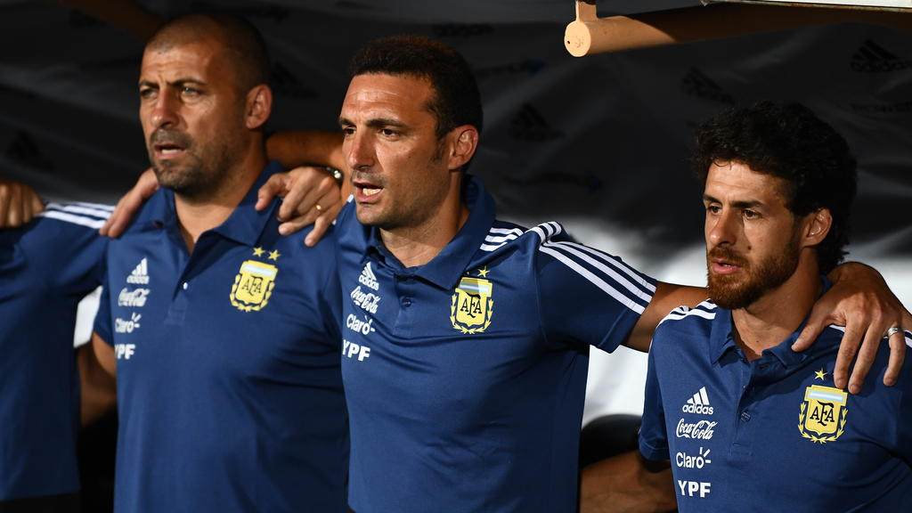
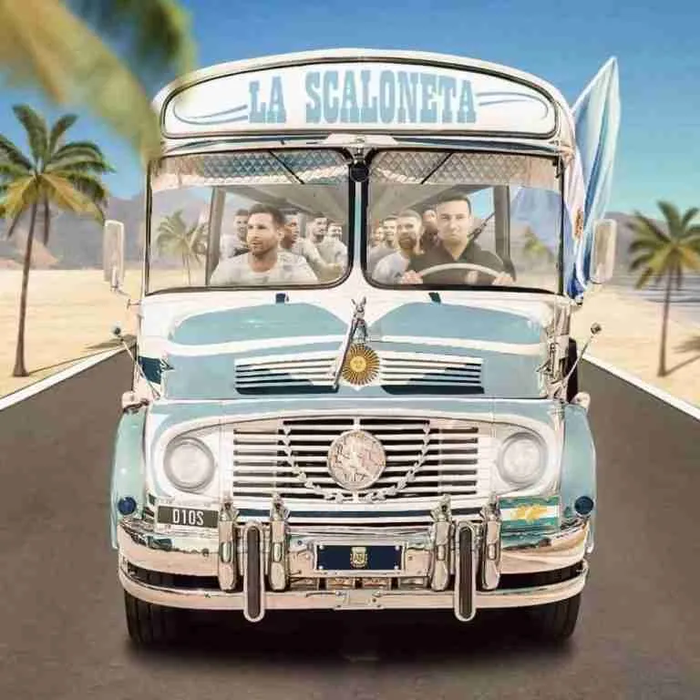
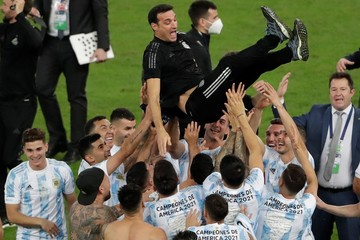

Lionel Sebastián Scaloni
Né le 16 mai 1978 à Rosario, province de Santa Fe, est un footballeur
international argentin devenu entraîneur.
En 2018, après des expériences ratées avec d’autres entraîneurs,
l'AFA choisit d'offrir le poste d’entraîneur par intérim à Lionel Scaloni.
Sa nomination provoque une grande surprise, étant donné que l'expérience
du jeune entraîneur se réduit uniquement à avoir dirigé l'équipe U-20 avec
Pablo Aima.
Dès le début, le nouveau staff technique composé de Scaloni, Pablo Aimar,
Walter Samuel et Roberto Ayala a montré une volonté particulière de parier
sur des joueurs relativement peu connus dans le panorama des grandes ligues
de football d'élite, en leur donnant l'opportunité de valoriser leur carrières.
Ainsi, les portes ont été ouvertes aux jeunes footballeurs qui auraient la
chance de porter pour la première fois le maillot national, comme Lautaro
Martínez, Paredes, De Paul, Rulli et Foyth.
Dans le même temps, plusieurs acteurs du milieu local se sont joints au
processus, qui jusqu'alors n'avaient pas été pris en compte. Là, entre autres,
Armani, Montiel et Palacios de River Plate se sont distingués et
Lisandro Martínez de Defensa et Justicia.
Scaloni a débuté son mandat lors du double rendez-vous de la FIFA en septembre,
lors d'une tournée aux États-Unis.

Grâce au bilan positif des matchs amicaux et à la bonne image que l'équipe
d'entraîneurs a acquise parmi les joueurs convoqués et la direction de la
Fédération Argentine de Football (AFA), Scaloni est nommé entraîneur définitif
de l'équipe nationale le 29 novembre. Sa continuité est assurée jusqu'à
la Copa América 2019 par le président de l'AFA, Claudio Tapia, qui lui
apporte son soutien et également une option pour prolonger son contrat
jusqu'à la Copa América 2020.
La nomination a également été soutenue par
le directeur des équipes nationales, César Luis Menotti, lorsqu'il a pris
ce poste en janvier 2019.
Plusieurs médias locaux ont remis en question
cette décision en raison du manque d'expérience de Scaloni en tant
qu'entraîneur, puisqu'il avait seulement dirigé l'équipe nationale de
football d'Argentine des moins de 20 ans avant de prendre ses
fonctions.
La presse a comparé le "jeune homme inexpérimenté" Scaloni à
d'autres grands noms qui, selon les rumeurs, dirigeraient l'équipe nationale,
comme Diego Simeone, Mauricio Pochettino et Marcelo Gallardo.
Aucune critique n'a peut-être été aussi tenace que celle de Diego Maradona, qui a
assuré que "Scaloni ne peut même pas diriger le trafic".
Après sa confirmation, Scaloni a fait face à l'épreuve décisive de tous les
entraîneurs argentins de la dernière décennie : intégrer dans l'équipe
Lionel Messi.
Le retour tant attendu du capitaine de l'équipe et meilleur buteur de
tous les temps a eu lieu le 22 mars 2019 lors d'un match amical contre
le Venezuela.

Compte tenu du réajustement des attentes produit après l'échec de 2018 et
du profond renouveau qui a suivi, le bilan de la performance de l'Argentine
en Copa América 2019 a été favorable. Bien qu'elle ait été sur le point d'être
éliminée dès la première phase, l'équipe a montré des signes d'évolution
constante tout au long de la compétition, faisant preuve d'un bon jeu et d'un
bon caractère pour affronter des matchs difficiles.
Durant le reste de l'année 2019, l'équipe a disputé trois matchs amicaux sans
la présence de Messi, battant le Mexique avec un retentissant 4-0,
faisant match nul 2-2 contre l'Allemagne et battant l'Équateur 6-1.
L'année 2021 n'est allé qu'en s'améliorant, s'étirant au fil des matchs par une
énorme séquence sans défaite (la dernière avait eu lieu contre le Brésil en
2019) qui atteindrait 36 matchs, constituant la plus longue de l'histoire de
l'équipe nationale et la deuxième en équipe nationale de football dans le monde.
Lors de la Copa América, parmi les fans de l'équipe argentine et sur les
réseaux sociaux, l'équipe de Lionel Scaloni a commencé à être comparée de
manière humoristique à un véhicule qui avance en ligne droite vers l'atteinte
de ses objectifs. Le nom de famille de l'entraîneur, mélangé avec le
mot « camion », a donné naissance au surnom de « Scaloneta ».
Copa América 2021
La liste de la Copa América 2021 a confirmé les récents ajouts à l'équipe,
laissant de côté deux habitués du cycle, Dybala et Ocampos.
L'équipe dirigée par Lionel Scaloni formait le groupe A avec l'Uruguay,
le Paraguay, le Chili et la Bolivie.

Leur classement en première position les a amenés à se retrouver en quarts
de finale avec l'Équateur, qui occupait la quatrième position du groupe B.
Le match s'est joué le 3 juillet et s'est terminé par une victoire
de l'Albiceleste par 3 à 0.
Le 6 juillet, l'Argentine affrontait la Colombie à Brasilia pour les demi-finales
de la compétition. Le match s'est décidé lors des tirs au but, où l'Argentine
a gagné 3 à 2 grâce à une performance surprenante du gardien argentin
Emiliano Martínez. C'était la première fois qu'un gardien de l'équipe
argentine bloquait trois tirs lors d'une séance de tirs au but. L'Albiceleste
a ainsi atteint la finale de la Coupe contre le vainqueur du Brésil-Pérou.
Le 10 juillet, l'équipe argentine affrontait le Brésil au stade Maracaná de
la ville de Rio de Janeiro pour la finale de la Copa América 2021.
L'équipe a été sacrée championne (0-1), mettant fin à une disette de 28 ans sans titres
internationaux, au cours de laquelle l'équipe a perdu quatre finales de la
Copa América (2004, 2007, 2015 et 2016), une finale de la Coupe des
Confédérations (2005) et un de la Coupe du monde (2014). Des joueurs ayant
une longue carrière de footballeur dans l'Albiceleste, tels que Messi,
Di María, Agüero et Otamendi, ont remporté un titre international avec
l'équipe senior pour la première fois de leur carrière. À son tour, la
victoire signifiait la première édition de la Copa América organisée sur
le sol brésilien où l'équipe locale ne pouvait pas remporter le titre,
puisque l'équipe vert-jaune avait remporté les éditions 1919, 1922, 1949,
1989 et 2019 en termes de qualité d'hôte.
Messi a été élu meilleur joueur du tournoi, en plus d'être le meilleur
assistant et meilleur buteur du tournoi avec 4 buts. De plus,
Emiliano Martínez a été choisi comme meilleur gardien de la compétition.
Finalíssima 2022

L'équipe s'est préparée à jouer la Finalíssima contre l'équipe italienne,
tous deux champions de leurs tournois continentaux respectifs.
Le match avait également une énorme valeur symbolique, puisque le regretté Diego
Maradona a joué dans les deux pays, en plus de se dérouler sur le territoire
anglais, où même à travers des chants populaires hostiles, se manifeste
une aversion argentine qui transcende les frontières sportives.
Le match s'est joué le 1er juin 2022 et a commencé avec l'équipe argentine
contrôlant uniformément la possession du ballon. Le nouveau but de Di María
en finale n'est pas sans rappeler ceux marqués contre le Brésil en Copa
América et contre le Nigeria aux Jeux Olympiques, dans tous les cas en le
frappant sur le gardien et en permettant à l'équipe de remporter un nouveau
titre.
FIFA World Cup 2022
Lors de la cérémonie de remise des prix, Messi a remporté le Ballon d'Or
du meilleur joueur de la compétition, étant le seul footballeur à avoir
obtenu cet exploit à deux reprises (le précédent était finaliste en 2014).
Il a également remporté le Soulier d'Argent en tant que deuxième meilleur
buteur, à un but de Mbappé. De son côté, Emiliano Martínez a remporté
le Gant d'Or du meilleur gardien et Enzo Fernández le prix du meilleur
jeune joueur du tournoi. Le gala The Best FIFA Awards 2022 a confirmé la
domination de ces joueurs dans leurs catégories respectives, aux côtés de
Lionel Scaloni comme meilleur entraîneur.
Le travail de Lionel Scaloni a été souligné dans la presse sportive pour
sa flexibilité dans l'adaptation de la stratégie aux exigences de chaque
rival,
sans avoir recours à un entraînement répété ou à une approche tactique
dans aucun des sept matches de la Coupe du monde. D'autre part, la lucidité
de changer d'équipe après la surprenante défaite initiale a permis l'entrée
soudaine d'Enzo Fernández, Julián Álvarez et Alexis Mac Allister dans le onze
de départ pour remplacer respectivement Leandro Paredes, Lautaro Martínez et
Alejandro Gómez, un changement qui positivement sur le jeu de l'équipe
nationale avant les matches décisifs.
Scaloni a largement dépassé le dernier
test majeur auquel il devait faire face pour dissiper les doutes sur la
qualité de son travail en équipe nationale : la confrontation avec les
puissances européennes. Justement, les moments de la meilleure performance
de l'équipe dans le tournoi ont été vécus dans les moments décisifs contre
les Pays-Bas, la Croatie et la France. En particulier, la finale de la Coupe
s'est distinguée - entre autres raisons - par la domination écrasante de
l'Albiceleste sur son rival pendant la majeure partie des 90 minutes,
au cours desquelles la présence surprenante de Di María comme titulaire
sur l'aile gauche a été essentielle, lorsque sa position avait été à
droite depuis des années.
Copa América 2024
L'équipe argentine a commencé sa participation à la Copa América 2024
organisée aux États-Unis en tant que championne en titre. L'équipe de
Scaloni a remporté son groupe (Groupe A) qu'elle partageait avec le Canada,
le Chili et le Pérou, avec un rythme parfait avec 3 victoires.
En quarts de finale, l'Équateur a compliqué son jeu avec l'Argentine et a
obtenu l'égalité dans les dernières minutes.
En demi-finale, elle rencontrera à nouveau l'équipe canadienne et remportera
à nouveau la victoire avec moins de souffrance. Le score était de 2-0 pour
l'Albiceleste, avec des buts de Julián Álvarez en première mi-temps et de
Messi dans les premières minutes de la seconde mi-temps.
La finale contre la Colombie a été le match le plus difficile pour
l'Argentine du tournoi, atteignant la prolongation contre une équipe colombienne
invaincue depuis 28 matchs. L'Argentine a ajouté un nouveau titre pour
être couronnée double championne d'Amérique et Scaloni obtiendrait sa
quatrième récompense officielle avec l'entraîneur de l'équipe nationale
argentine, égalant Alfio Basile en nombre de titres.
De plus, l'équipe nationale argentine a remporté son 23ème titre officiel,
devenant ainsi l'équipe nationale de football la plus gagnante de l'histoire
du monde; et, à son tour, de la Copa América, puisqu'elle a atteint 16
réalisations et a dépassé l'Uruguay, qui en a maintenu 15 depuis 2011.
Entre-temps, depuis le début du XXIe siècle, elle est devenue l'équipe
absolue qui a le plus de finales officielles qu'elle ait joué, avec 10,
puisqu'aux quatre titres obtenus entre 2021 et 2024 s'ajoutent les
vice-champions obtenus lors de la Copas América 2004, 2007, 2015 et 2016,
en Coupe des Confédérations 2005 et en Coupe du Monde 2014.